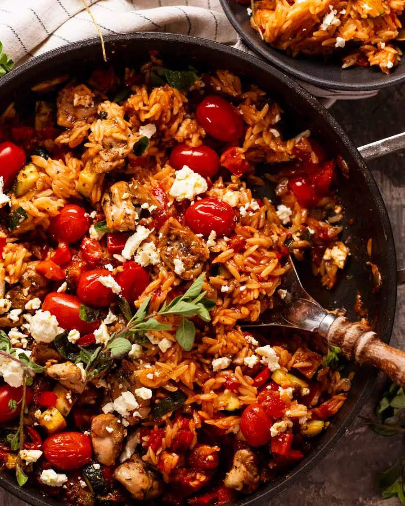

One-Pot Baked Greek Chicken Risoni

Description
This flavor-packed Greek Chicken Risoni (Orzo) is a quick and easy weeknight wonder.
Imagine tender chicken pieces marinated in lemon and garlic, sun-kissed veggies, and perfectly
cooked risoni pasta, all baked together in a vibrant tomato and lemon sauce in just one pot!
It creates a comforting, risotto-like texture without all the stirring.
Ingredients
Marinated Chicken
- 500g / 1 lb chicken thighs, boneless skinless, cut into 2 cm / 1" pieces
- 2 garlic cloves, finely minced
- 1 tbsp dried oregano
- 1 tbsp olive oil
- 1/2 tbsp lemon juice
- 1 tsp lemon zest
- 1/2 tsp each salt and pepper
Risoni & Vegetables
- 1 cup orzo / risoni, uncooked
- 2 tbsp olive oil
- 2 garlic cloves, minced
- 1 small onion, finely chopped
- 2 zucchini, cut into 1cm cubes
- 1 red bell pepper / capsicum, cut into 1cm cubes
- 1 tbsp dried oregano
- 2 1/2 cups chicken broth, low sodium
- 400g / 14 oz canned crushed tomatoes
- 1 tbsp tomato paste
- 1 punnet cherry tomatoes
Garnish (Optional)
- Crumbled feta cheese
- Fresh lemon wedges
Steps
- Marinate chicken: Combine all Marinated Chicken ingredients in a bowl and set aside to marinate for 20 minutes.
- Preheat oven: Set your oven to 180°C / 350°F (160°C fan-forced).
- Brown chicken: Heat 1 tablespoon of olive oil in a large ovenproof skillet or pot over high heat. Cook chicken until lightly browned but still pink inside. Remove chicken from the skillet and set aside.
- Sauté vegetables: Turn the heat down to medium-high. Add another tablespoon of olive oil, minced garlic, and chopped onion. Sauté for 1 minute, then add the diced zucchini and bell peppers. Cook for 2 more minutes.
- Add everything else: Stir in the dried oregano, chicken broth, canned crushed tomatoes, tomato paste, salt, and pepper. Mix well, then add the uncooked risoni pasta and stir to combine.
- Assemble and Bake: Scatter the browned chicken pieces and the whole cherry tomatoes across the surface (do not stir them in). Bring the liquid to a simmer on the stove, then transfer the uncovered pot to the oven.
- Finish: Bake for 15 minutes or until the risoni is tender and has absorbed most of the liquid. Garnish with crumbled feta and serve with fresh lemon wedges.
Back to Cookbook